The face-gesture space shooter, rebuilt as a Python desktop game: real-time 3D in a grim retro low-poly style, seven levels to the Catlien mothership, adaptive drum & bass, and a life-support helmet with an exposed brain laid over your webcam image.
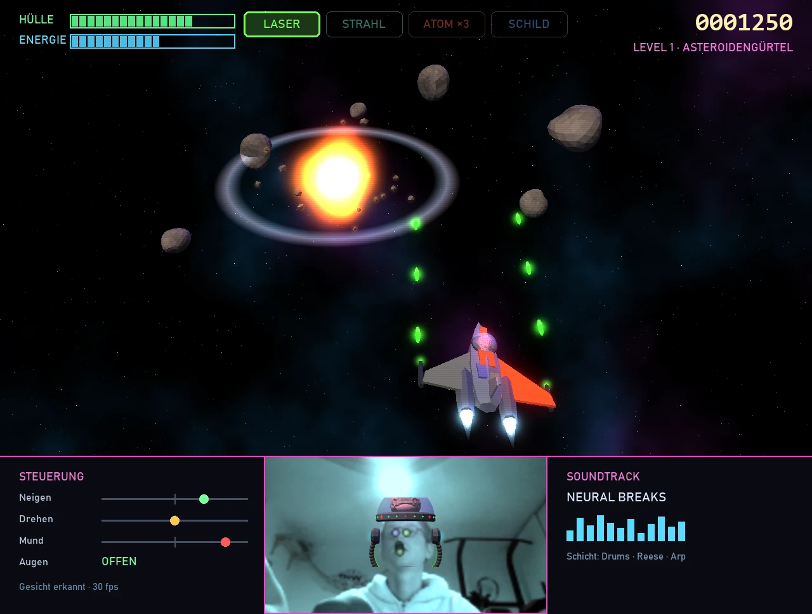
Python is a good fit: the heavy lifting runs in C++ anyway (the Panda3D renderer and MediaPipe inference), and the game logic itself is light. Godot (MIT) with C# would be the alternative, but face tracking is much harder to wire up there.
Every image on this page was rendered with Panda3D on your machine, so the engine runs and the models can go straight into the game.
| Part | Library | License | Job |
|---|---|---|---|
| 3D engine | Panda3D 1.10 | BSD-3 | rendering, scene graph, shaders (bloom), GUI, audio playback, packaging to .exe (build_apps) |
| Face | MediaPipe FaceLandmarker | Apache 2.0 | 478 landmarks, 52 blendshapes (jawOpen, eyeBlinkLeft/Right) and a head transformation matrix (roll / yaw / pitch) |
| Webcam | opencv-python | Apache 2.0 | capture and mirror the camera image |
| Audio synthesis | numpy, scipy | BSD | music stems and sound effects generated in code, no third-party samples |
| Fonts | e.g. Chakra Petch, Orbitron | OFL | may be embedded in the game |
| Voice-over | Piper TTS, English voice trained on public-domain data (e.g. LJSpeech) | MIT | narrator and AI scientists, generated once offline and shipped as WAV; each voice's license gets checked before it is used |
The game is 2.5D: the graphics are fully 3D and the camera looks over the ship from behind and above, but play happens on a plane, as in the robust 2D original. Your level rules are written in screen pixels ("top of the screen", "10–30 px"), so they map 1:1 onto a logical 2D coordinate system that the 3D scene is projected from.
The ship always has constant forward thrust. Tilting your head only moves it left or right, never faster or slower. Thrust stops only for boss fights: the mothership holds position at the top of the screen and the starfield stops scrolling.
| Gesture | Detection | Effect |
|---|---|---|
| Tilt head left / right | roll angle from the transformation matrix, ±4° dead zone, smoothed with a One-Euro filter | ship slides left / right. Analog: the further you tilt, the faster it slides, and it banks visibly. Forward thrust is unaffected |
| Turn head left / right | yaw angle past ±18°, with hysteresis and a 0.6 s lockout | previous / next weapon |
| Open mouth | blendshape jawOpen, threshold from calibration, edge-triggered | Laser: one pulse per opening; close your mouth to re-arm · Beam: fires while the mouth is open and energy lasts · Nuke: one per opening · Shield: each opening toggles it on/off |
| Close eyes | blendshapes eyeBlinkLeft + eyeBlinkRight, calibrated per player (works with glasses) | protection from hypno pulses (levels 3 and 7) |
Before the first level there is a 5-second calibration: look straight ahead, open your mouth once, close your eyes once. That sets the neutral pose and thresholds for your camera and face. A keyboard fallback exists for development and testing.
Low-poly with hard flat shading, bloom and faint scanlines: retro but clean, a notch grim. Everything is generated in code. Human tech is patched-together, rusty orange salvage. Catliens are near-black biomech hulls with dried-blood plates, bone struts and ember-red slit sensors.
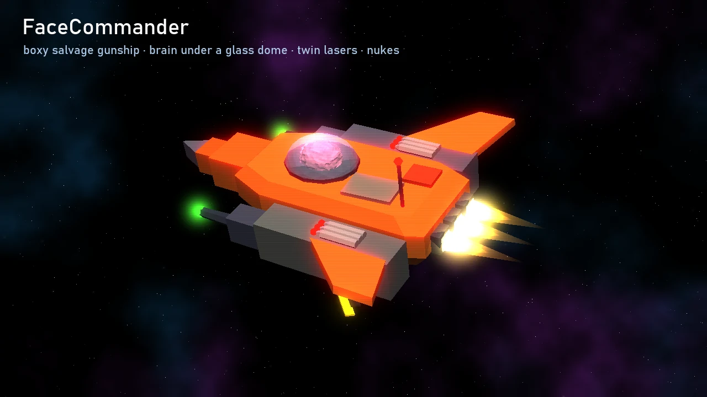
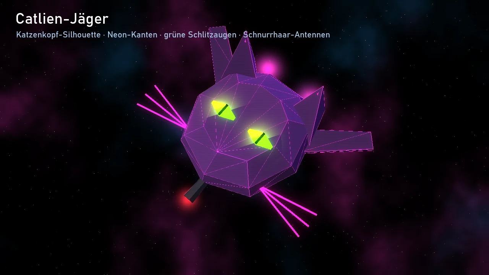
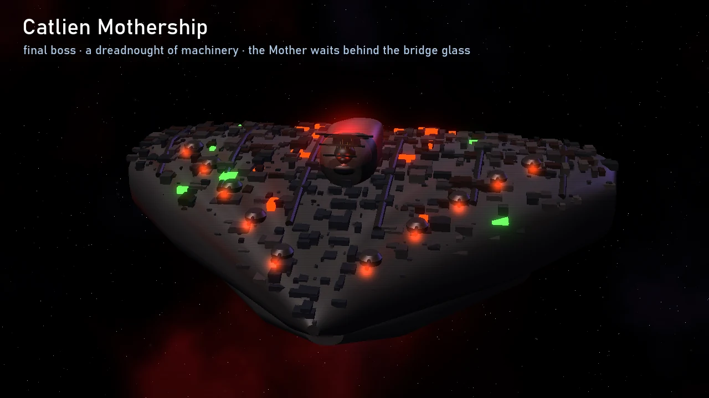
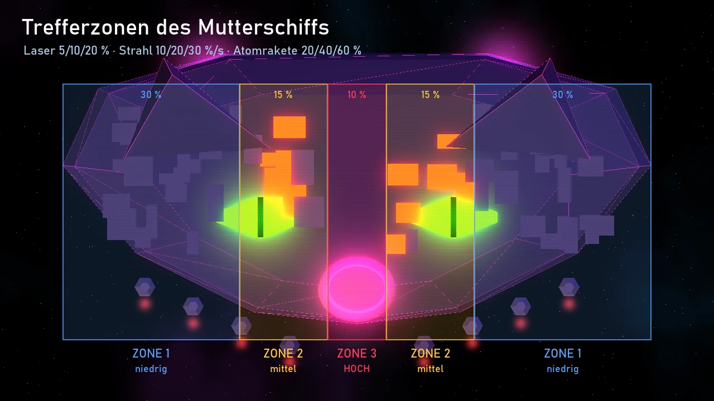
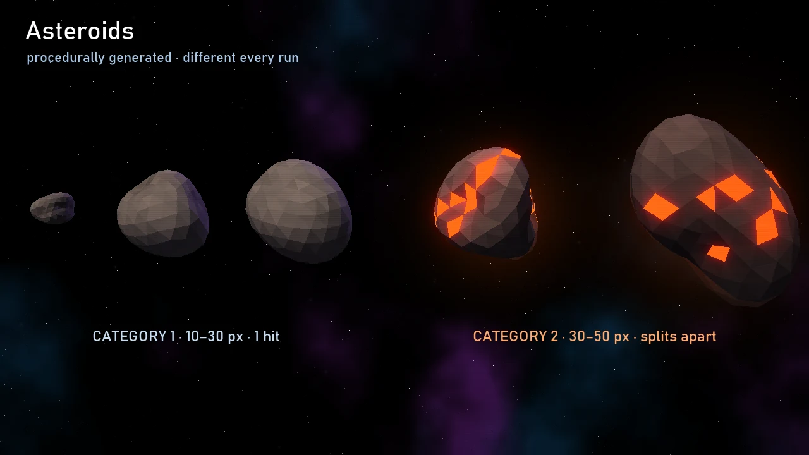
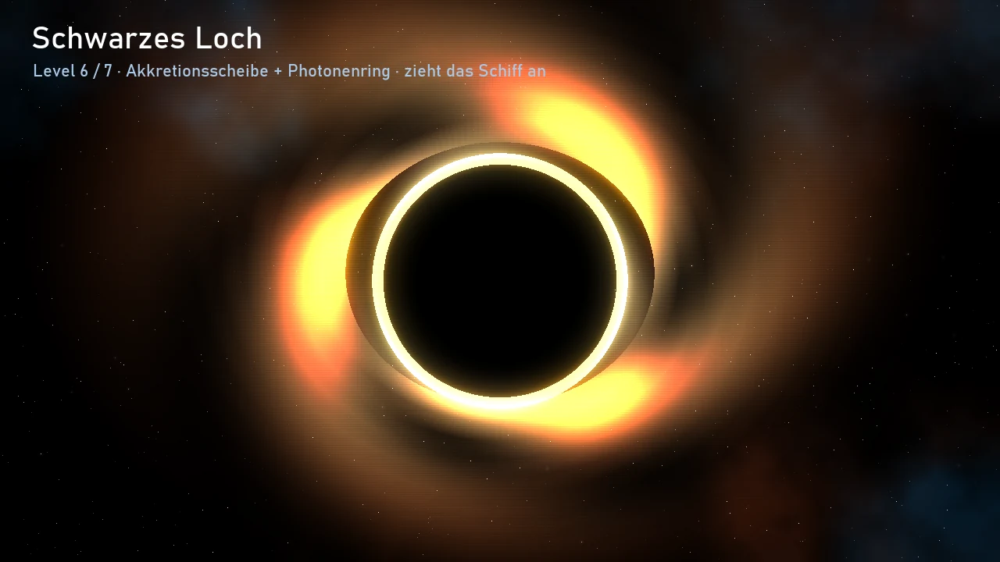
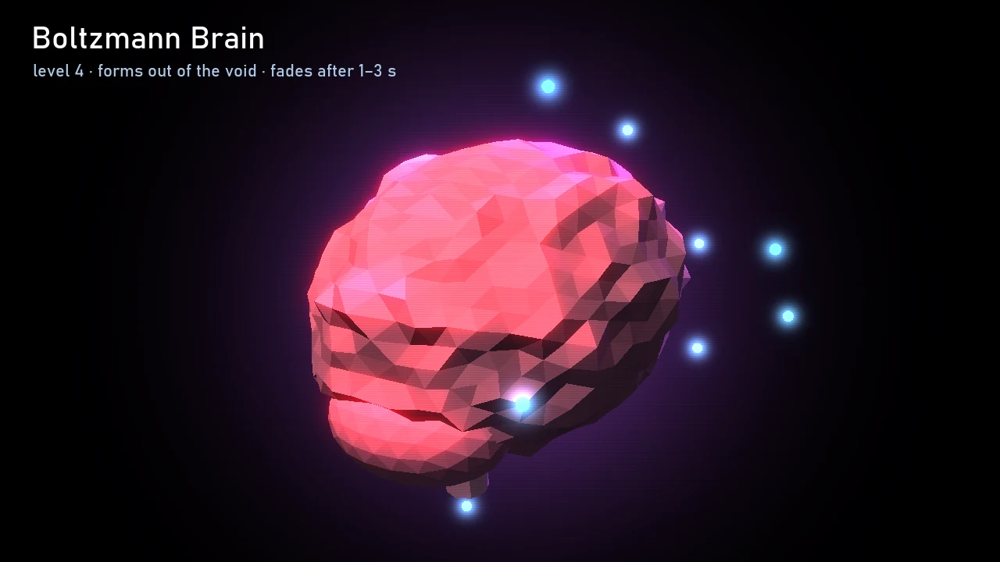
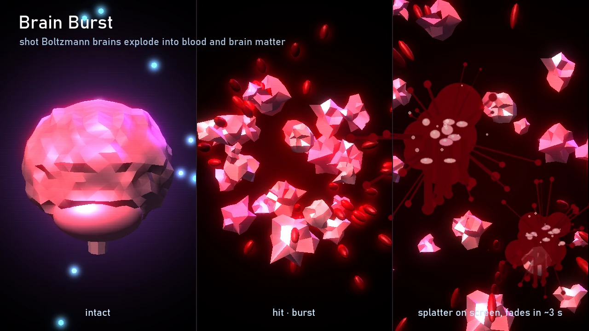
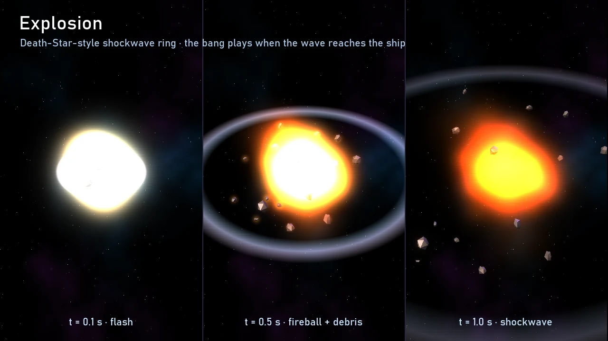
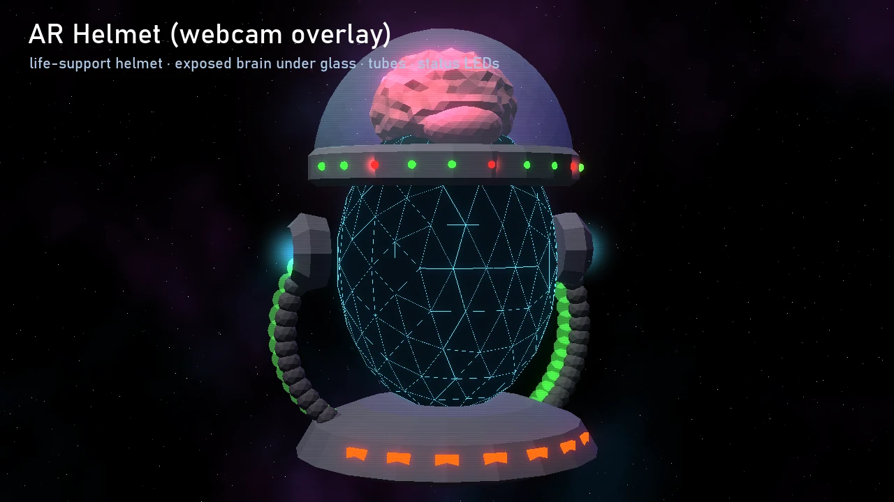
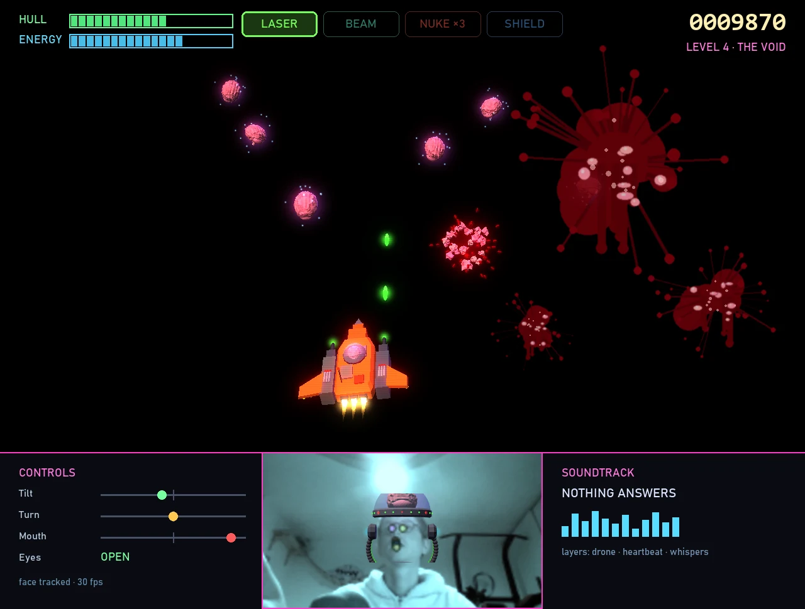
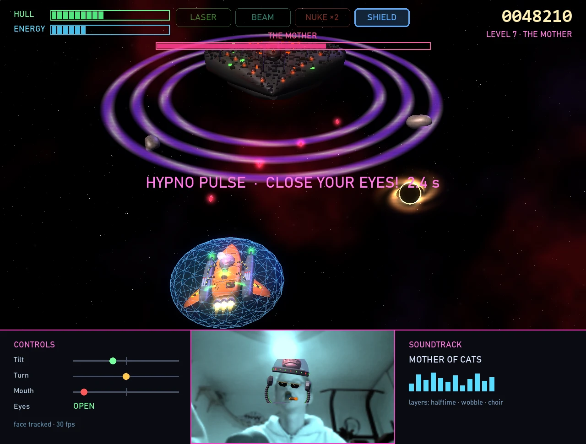
The helmet is a 3D model. MediaPipe delivers the head's transformation matrix for every webcam frame, and Panda3D renders the helmet in exactly that pose over the mirrored camera image. When you tilt or turn your head, the helmet moves with it.
The face stays uncovered, so you recognise yourself and can see the mouth and eye detection working. The status LEDs on the head band show live what is detected: mouth open, eyes closed, weapon switch.
The game runs fullscreen by default. The 16:9 play area sits on top and the webcam panel below it, as in the original, next to the control gauges and the current track. F11 switches to windowed mode, and the webcam panel can be hidden.
Each level is a jump to the next star, since James only remembers the way from star to star. A progress bar shows the distance to that star. All numbers live in a config file and can be tuned without touching code.
| Level | Content (as you specified) | Goal | Music |
|---|---|---|---|
| 1 · Asteroid Belt | always 3 category 1 asteroids, 1 hit, 25 % damage | survive ~90 s | liquid DnB, rolling reese bass |
| 2 · Debris Field | 4× cat. 1 + 1× cat. 2 (2 hits / 2 s beam / 1 nuke, splits apart), 50 % damage. Beam and nukes unlock here | survive ~90 s | jump-up DnB, heavier bass |
| 3 · Hypno Nebula | 1–2× cat. 1; hypno pulses announced 3 s ahead, keep your eyes closed for 10 s, sonar beeps for objects ahead, open eyes freeze the ship | survive ~90 s | mysterious and sparse; ducked during a pulse so the sonar is audible |
| 4 · The Void | nothing, no stars; up to 10 Boltzmann brains (¼ ship size, 1–3 s, never on the ship), 5 % damage; shootable, burst gorily | survive ~60 s | dark ambient, heartbeat, whispers |
| 5 · Patrol | 1–3× cat. 1, 2 Catlien raiders (6 laser pulses / 4 s beam / 2 nukes), their shots deal 10 % | destroy both raiders | darksynth / cyberpunk |
| 6 · Event Horizon | like level 1, plus 0–1 black hole; steer against the pull, too close means game over | survive ~90 s | halftime dubstep, sub pressure rises as you get closer |
| 7 · The Mother | thrust stops. Mothership shots (every 4 s, 5 %), black hole bomb (about every 2 min, 5 %/s, 10 s), hypno pulses (5–10 s, then 10 s at +50 % vulnerability), energy regeneration, 3 damage zones | destroy the mothership | epic: DnB and dubstep alternating, faster below 25 % boss energy |
| Weapon | Mouth | Cost (proposal) | From level |
|---|---|---|---|
| Laser cannon | one pulse per opening | 4 % energy per pulse | 1 |
| Laser beam | active while open and energy lasts | 15 % energy per second | 2 |
| Nuke | one per opening | 3 per level, plus 30 % energy | 2 |
| Energy shield | each opening toggles it | 10 % per second, reduces collision damage by 60 % | 1 |
Energy recharges at 12 %/s once no weapon has been active for 0.5 s. The hull regenerates slowly at 1 %/s. The game is over when the hull hits 0 % or a black hole swallows you.
Easy: after game over you restart at the beginning of the current level. Hard: you start again from level 1. Both modes keep separate highscore lists.
Outro (about 45 s): the eye of the mothership cracks, then chain explosions run along the ribs and one huge shockwave rolls over your ship. Across the galaxy the swarm loses its Mother: raiders drift, collide and fire on each other. On a slave planet the collars click open. In the cockpit the helmet LEDs turn green one after another, and James says, slowly: "My name is... James Nathaniel Honor." Credits roll over the score theme.
Endless mode unlocks after that: "The swarm is in chaos. Clean up what's left." It mixes elements from all levels at rising difficulty, with its own highscore.
Each track is made of several stems (drums, bass, arp, pad, special layer) that the game fades in and out on the bar. Low hull adds a heartbeat and muffles everything; near a black hole the filters and pitch drop; game over triggers a tape stop. The stems are synthesized in code, rendered once on first launch and cached.
Sound effects are made the same way: laser zap, dull collision thud, shield hum, explosions delayed by distance, sonar ping placed in stereo, a warning siren before a hypno pulse, and a wet burst and splat for the brains.
The intro runs in real time in the engine. Its last shot shows your live webcam image with the helmet: you become FaceCommander. Space, Esc or holding your mouth open for 2 s skips it. The darkest parts of the backstory appear as visible silhouettes, backed by text cards.
"FaceCommander - you are our last hope!"
Then title card, calibration, level 1.
Highscore board: local top 10 per mode (Easy, Hard, Endless) with name (keyboard), score, level reached and date, stored in the user profile. Points: cat. 1 asteroid 100, cat. 2 250, brain 50, raider 1,000, mothership 10,000, plus distance and a level bonus for remaining hull.
One source file per level: yes, that makes sense. A shared Level base class handles spawning, progress, music cues and win/lose checks. Each level file only contains what is special about it (the hypno pulse cycle, brain spawning, black hole pull, the boss state machine). Numbers live in levels.toml, behaviour in the level file.
Camera and MediaPipe run in their own thread at 30 fps; the game runs at 60 fps. Game logic is 2D on the plane and kept separate from the 3D rendering.
faicecommander/
main.py
core/ app.py, states: intro · menu · calibration · play · game_over · highscore · outro
input/ face_tracker.py (thread), gestures.py (calibration, filters, hysteresis, edge triggers), keyboard.py
game/ world.py, weapons.py, collision.py
entities/ ship.py, asteroid.py, raider.py, mothership.py, brain.py, black_hole.py, projectiles.py
levels/ base.py
level_01_asteroid_belt.py
level_02_debris_field.py
level_03_hypno_nebula.py
level_04_the_void.py
level_05_patrol.py
level_06_event_horizon.py
level_07_the_mother.py
endless.py
render/ models.py (procedural), effects.py (explosions, hypno, splatter), hud.py, webcam_view.py (AR helmet)
cutscenes/ intro.py, outro.py
audio/ synth.py, music.py (stems, adaptive mixer), sfx.py, sonar.py, voice/ (pre-rendered WAV)
data/ config.toml, levels.toml, texts_en.toml
assets/ fonts (OFL), face_landmarker.task
Each one has my proposal. "OK" is enough if it fits.